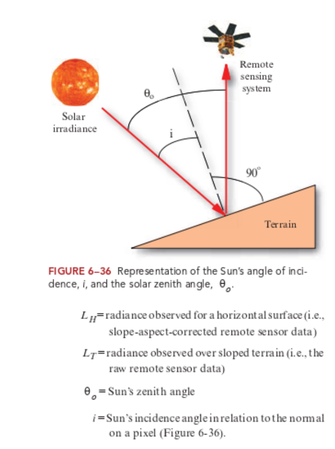

3 Corrections
3.1 Summary
3.1.1 Corrections
3.1.1.1 Geometric Corrections
To reduce geometric distortion
Off-Nadir -> Nadir
- Ground central point: GCP
-
A ground control point (GCP) is a location on the surface of the Earth (e.g., a road intersection) that can be identified on the imagery and located accurately on a map.
(Objects (e.g. building) on the image that do not move, as the reference point of corrections.)
Coordinates of each GCP -> linear regression
Reduce error <- increase GCP
Requirement for corrections:
- same resolution (resampling)
- same CRS (reprojecting)
- Image-to-map rectification (rectify remotely sensed data to a standard map projection)
- Image-to-image registration (remotely sensed data used in conjunction with other spatial information in a GIS)
Forward (input-to-output) mapping
- Forward mapping
-
X: original image -> Y: target image
✔️rectify the location of discrete coordinates found along a linear feature such as a road in a vector map
❌possibility of points outside ‘gold standard’ (the rectified/targeted image) -> output matrix pixel with no output value
Inverse (output-to-input) mapping
- Backward mapping
-
X: target image -> Y: original image
✔️ use points on ‘gold standard’ to match point on original data
Moisaicking
- Mosaicking
-
Moisaicking is the process of combining multiple images into a single seamless composite image.
cut-line feathering: offset the edge of images by certain distance
edge feathering: specify objects (e.g. roads/rivers) as edge
3.1.1.2 Practical: Merging imagery
Although Kinmen County is rather a small area, covered sufficiently within one tile of the Landsat imagery, another adjacent tile would be chosen to practice merging.
3.1.1.3 Atmospheric Corrections
To mitigate the effect of scattering and absorption & to avoid loss of reflectance & signiture extension thorough space and time (Jensen 2015)
Point Spread Function
- Point Spread Function
-
Measured and modeled point spread functions (PSF) of sensor systems indicate that a significant portion of the recorded signal of each pixel of a satellite image originates from outside the area represented by that pixel. This hinders the ability to derive surface information from satellite images on a per-pixel basis (Huang et al. 2002).
Relative
1) to normalize the intensities among the different bands within a single-date remotely sensed image, and 2) to normalize the intensities of bands of remote sensor data in multiple dates of imagery to a standard scene selected by the analyst.
Dark object subtraction (DOS)
❌ assuming unusual brightness of darkest pixel as atmosphere
Multiple-date image normalization using regression
Pseudo-Invariant Features (PIFs) selection = radiometric GCP
Requirements of PIF: 1) little changes through time; 2) similar elevation as other land in scene; 3) minimal vegetation; 4) in a relatively flat area.
Use middle of years, Y: base image
Absolute
❌ High data requirement (fieldwork/…); High software requirement (costy)
✔️Digital counts in satellite / aircraft image data -> scaled surface reflectance
- Empirical Line Calibration (ELC)
Requirements:
- Two or more areas in the scene with different albedos (e.g., one bright target such as sand and one dark target such as a deep, nonturbid water body) & as homogeneous as possible <- difficult.
- Sensor calibration coefficients
- Radiative transfer code (knowledge of sensor spectral profile & atmospheric properties at the time of data collection) (Jensen 2015)
- Empirical Line Calibration (ELC)
3.1.1.4 Topographic Corrections (Orthorectification)
To remove topographically induced illumination variation
- Illumination
-
the cosine of the incident solar angle, thus representing the proportion of the direct solar radiation hitting a pixel.
Requirements: sensor geometry & elevation model
Should be done after atmospheric corrections
Cosine Function: \(LH=LT\frac{cosθO}{cosi}\)
- Zenith
-
The solar zenith angle is the zenith angle of the sun, i.e., the angle between the sun’s rays and the vertical direction. Solar zenith angle is normally used in combination with the solar azimuth angle to determine the position of the Sun as observed from a given location on the surface of the Earth.
- Azimuth
-
The solar azimuth angle is the azimuth (horizontal angle with respect to north) of the Sun’s position.

❌ not considering diffuse skylight / light reflected from surrounding mountainsides
smaller cos i -> greater over-correction (Jensen 2015)
3.1.1.5 Radiometric Calibrations
Digital number of each pixel = raw, unitless
Regression = unit
Reflectance (BOA) = comparable
TOA radiance -> TOA reflectance = no light
Surface reflectance = no light, no atmosphere
Hemispherical reflectance (e.g. in Labs)
Apparent reflectance
3.1.2 Enhancement
3.1.2.1 Feathering / joining
GEE: median
surface reflectance data not comparable -> standardization, normalization
3.1.2.2 Image Enhancement
Contract enhancement (QGIS)
✔️ not changing data, but the display
Ratioing
divide / compare bands with each other, normalized surface reflectance
✔️ identify a certain landscape feature
Example: Normalised Difference Vegetation Index (NDVI)
Filtering
PCA
Texture analysis
1st order occurrence: ✔️classification
Edge of building enhanced via 1st order variance
2nd order co-occurrence: ✔️classification improvement and additional info (to other bands)
can then be used in PCA
Fusion
Combine bands from different sensors / texture analysis layer
Resampling - different pixel/location
Decision
Object
Image
Pan sharpen: for better visualization
3.1.3 Questions
3.2 Application
3.2.1 Corrections
Geometric Corrections: Redlining in the US.
The historical maps/plans were drawn by hands. Those maps were digitized through geometric corrections, allowing the research/manipulation of this database on housing policy relating to socio-economic wellbeing and zoning.
Redlining historic map corrections
3.3 Reflection
Different methods of corrections are interlinked, finding some reference points/signatures to rectify the image. The detailed processes (like regressions and data collection methods) are difficult to digest (probably because not being practiced) while the software is available for corrections.